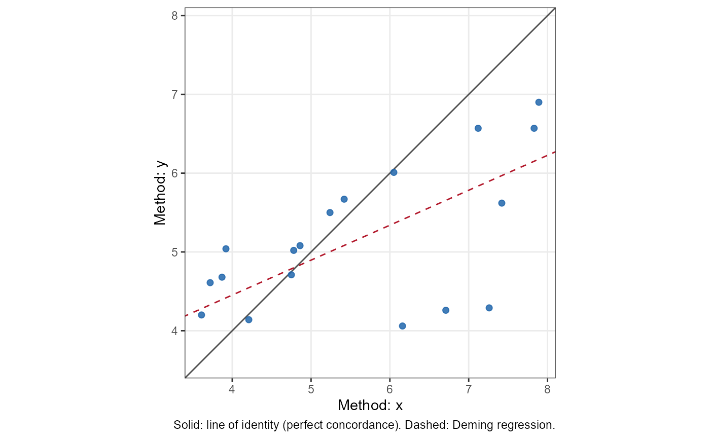

Computes Lin's Concordance Correlation Coefficient (CCC) and performs a
hypothesis test, returning an object of class "htest".
Arguments
- x
Either a numeric vector of measurements for method 1, or a character string naming the column in
datacontaining method 1 measurements.- y
Either a numeric vector of measurements for method 2, or a character string naming the column in
datacontaining method 2 measurements.- id
A character string naming the column in
datacontaining subject identifiers. Required whendata_typeis"reps"or"nest".- data
An optional data frame containing the variables named in
x,y, andid.- data_type
Character string specifying the data structure:
"simple"for paired data with one observation per subject (default),"reps"for replicate data where subjects are measured multiple times,"nest"for nested data structures.- conf.level
Confidence level for the interval, default is 0.95.
- null.value
The CCC under the null hypothesis. The default,
NULL, gives the estimate and interval without a test.- alternative
Character string specifying the alternative hypothesis:
"two.sided"(default),"greater", or"less". Used only whennull.valueis given (without a test the interval is two-sided); a one-sided alternative gives a one-sided interval, as inicc_test().- boot
If
TRUE, use a nonparametric bootstrap that resamples subjects for the interval and p-value. DefaultFALSE. Available only fordata_type = "reps", where it is recommended with few subjects (fewer than about 30) or clearly non-normal data; see Details.- boot_ci
Bootstrap interval type:
"stud"(studentized, default and recommended),"perc"(percentile) or"bca". Used only whenboot = TRUE.- replicates
Number of bootstrap replicates (default 999).
Value
A list with class c("ccc_htest", "htest") containing the
following components:
- statistic
The test statistic on the Fisher z scale (
Zfor simple data,tfor reps/nest), when a test was requested (omitted withboot = TRUE).- parameter
When a test was requested: the number of pairs
nfor simple data, or the degrees of freedomdf(number of subjects - 1) for reps/nest. The number of pairs or subjects is also insettings$n.- stderr
The standard errors for CCC and Z-transformed CCC (for reps/nest, the jackknife SE of z, and the SE of the CCC from it by the delta method). With
boot = TRUE, alsoboot: the standard deviation of the bootstrap estimates.- p.value
The p-value for the test, when a test was requested.
- conf.int
A confidence interval for the CCC.
- estimate
The estimated CCC.
- null.value
The specified hypothesized value of CCC, if any.
- alternative
The alternative hypothesis.
- method
A character string indicating the method used.
- data.name
A character string giving the names of the data.
- data
The data used (
x,y, andidfor reps/nest), for the methods.- components
For simple data, Lin's decomposition: the Pearson correlation
r(precision) and the bias correction factorC_b(accuracy), with CCC = r x C_b.NULLfor reps/nest.- jackknife
For reps/nest, the delete-one-subject jackknife estimate of the small-sample bias: a list with
bias((g - 1) times the mean leave-one-out estimate minus the estimate),estimate_bc(the bias-corrected CCC, estimate - bias, kept within -1 to 1) andclamped(TRUEwhen the correction went past 1 or -1). Not printed, and not used by the interval or test; see Details.NULLfor simple data.- settings
The settings used, for the methods.
- boot
Bootstrap details (
NULLunlessboot = TRUE): the interval type, the number of replicates requested, used and failed, and the bootstrap estimates.
Details
The concordance correlation coefficient measures the agreement between two measurements of the same quantity. It combines measures of precision (Pearson correlation) and accuracy (bias correction factor) to determine how far the observed data deviate from the line of perfect concordance (45-degree line through the origin).
Simple data. Lin's (1989) estimator and asymptotic standard error are
used, from the complete pairs; these match DescTools::CCC() and
epiR::epi.ccc() (with ci = "z-transform").
Replicate data ("reps"; the true value is constant within a
subject). The CCC is estimated from variance components (Carrasco &
Jover, 2003): a linear mixed model with a fixed method effect and random
subject and subject-by-method effects, fit by REML, gives
$$CCC = \frac{\sigma^2_{s}}{\sigma^2_{s} + \sigma^2_{sm} +
\sigma^2_{m} + \sigma^2_{e}}$$
where \(\sigma^2_{m}\) is the variance between the method means. All
measurements are used, so the replicates of the two methods need not be
paired or equal in number. The estimate equals that of
cccrm::ccc_vc(int = TRUE).
Nested data ("nest"; the true value may change within a subject,
and each row is a matched pair). Lin's estimator is computed over all
complete pairs, which keep their pairing.
For both, the subject is the independent unit: the standard error of Fisher's z is a delete-one-subject jackknife, so it allows for the correlation of measurements within a subject. (Treating every pair as independent understates the standard error.) The interval and test use a t distribution with (number of subjects - 1) degrees of freedom. At least 3 subjects are needed.
In simulations (10, 20 or 50 subjects; 2, 3 or 6 measurements per subject; CCC 0.5 to 0.95; with and without a method difference and 15% missing data), 95% jackknife intervals covered about 93-95% of the time with normal data, but only 88-91% (replicate data) and 90-93% (nested data) with skewed subject effects and heavy-tailed errors, at every number of subjects. Misses fall mostly above the interval: the CCC is biased downward with few subjects (by about 0.03-0.04 with 10 subjects).
Bias. The jackknife estimate of that bias, and the bias-corrected
CCC, are kept in the jackknife element, and summary() mentions them
when the bias is more than 0.01 or more than 10% of the interval width.
They are a guide, not a replacement for the estimate. In the simulations
the correction removed 80-90% of the average bias with 10 or 20 subjects,
but the corrected value was closer to the true CCC in only 43-50% of
data sets, its root mean squared error was slightly larger (up to 28%
larger with non-normal data and 10 subjects), and with 10 subjects it
went past 1 (and is then truncated) in about 5% of replicate data sets.
It is most useful when CCCs from several small studies are averaged,
where the bias would otherwise accumulate. Centring the interval on the
corrected value did not improve its coverage, so the interval and test
use the uncorrected estimate.
Bootstrap (replicate data). With boot = TRUE, subjects are
resampled with replacement (a subject drawn twice counts as two
subjects) and the CCC is re-estimated. The studentized interval
(boot_ci = "stud") works on Fisher's z scale and divides each replicate
by its own delete-one-subject jackknife standard error; the p-value
inverts the interval (as in icc_test()) and is approximate. In the
simulations above it raised coverage with 10 subjects from 0.90 to 0.94
(from 0.88 to 0.94 with non-normal data) and with 20 subjects from 0.92
to 0.94, with intervals of about the same width, so boot = TRUE is a
good idea for replicate data with few subjects. With non-normal data and
6 replicates per subject some designs still covered only 0.88-0.89. The
percentile and BCa intervals covered poorly (0.80-0.91 on average) and
are offered only for comparison. Each replicate needs one model fit per
subject (from the subjects' summary statistics rather than lme4), so the
studentized bootstrap takes roughly 20 seconds with 10 subjects and a
minute with 30 subjects at the default 999 replicates. For nested data
no bootstrap interval improved on the jackknife.
The confidence interval and the hypothesis test use Fisher's
Z-transformation of the CCC:
$$Z = 0.5 \times \log\left(\frac{1 + CCC}{1 - CCC}\right)$$
By default (null.value = NULL) no test is done.
Relation to the ICC. For two methods, the CCC is close to the
absolute-agreement intraclass correlation, ICC(A,1)
(icc_test(type = "agreement")). Lin's estimator (simple and nested data)
uses n rather than n - 1 in the variances and covariance, as Lin (1989)
defined it and as other software computes it, so it is slightly below the
ICC in small samples; the difference vanishes as n grows (Nickerson, 1997;
Carrasco & Jover, 2003). The variance-components estimator (replicate
data) uses REML variance components and so corresponds to the ICC form. ccc_test() is meant for
method-comparison (agreement) studies; icc_test() for reliability
studies (see its "Choosing the form" and "Related coefficients"
sections).
Methods. summary() describes the result in words (including, for
simple data, whether a low CCC comes from poor precision or poor
accuracy), plot() draws the identity or Bland-Altman plot, and
check() gives diagnostics; see ccc_htest-methods.
References
Lin, L. I. (1989). A concordance correlation coefficient to evaluate reproducibility. Biometrics, 45(1), 255-268.
Lin, L. I. (2000). A note on the concordance correlation coefficient. Biometrics, 56(1), 324-325.
Carrasco, J. L., & Jover, L. (2003). Estimating the generalized concordance correlation coefficient through variance components. Biometrics, 59(4), 849-858. doi:10.1111/j.0006-341x.2003.00099.x
Nickerson, C. A. E. (1997). A note on "A concordance correlation coefficient to evaluate reproducibility". Biometrics, 53(4), 1503-1507. doi:10.2307/2533516
Examples
# Simple paired data using vectors
x <- c(1, 2, 3, 4, 5)
y <- c(1.1, 2.2, 2.9, 4.1, 5.2)
ccc_test(x, y)
#>
#> Lin's Concordance Correlation Coefficient
#>
#> data: x and y
#>
#> alternative hypothesis: two.sided
#> 95 percent confidence interval:
#> 0.9556798 0.9993495
#> sample estimates:
#> CCC
#> 0.9945839
#>
# Using data frame interface
data("reps")
# Simple data
ccc_test(x = "x", y = "y", data = reps)
#>
#> Lin's Concordance Correlation Coefficient
#>
#> data: x and y
#>
#> alternative hypothesis: two.sided
#> 95 percent confidence interval:
#> 0.1275808 0.7236639
#> sample estimates:
#> CCC
#> 0.4790783
#>
# Test against specific null value
ccc_test(x = "x", y = "y", data = reps,
null.value = 0.8, alternative = "greater")
#>
#> Lin's Concordance Correlation Coefficient
#>
#> data: x and y
#> Z = -2.873, n = 18, p-value = 0.998
#> alternative hypothesis: true CCC is greater than 0.8
#> 95 percent confidence interval:
#> 0.1892367 1.0000000
#> sample estimates:
#> CCC
#> 0.4790783
#>
# Replicate data
ccc_test(x = "x", y = "y", id = "id", data = reps, data_type = "reps")
#>
#> Concordance Correlation Coefficient (variance components)
#>
#> data: x and y
#>
#> alternative hypothesis: two.sided
#> 95 percent confidence interval:
#> -0.9037355 0.9843770
#> sample estimates:
#> CCC
#> 0.4341189
#>
# Replicate data with few subjects: studentized subject bootstrap
# \donttest{
ccc_test(x = "x", y = "y", id = "id", data = reps, data_type = "reps",
boot = TRUE)
#> Warning: 350 of 999 bootstrap replicates failed and were dropped; the bootstrap interval may be unreliable.
#>
#> Concordance Correlation Coefficient (variance components) with
#> nonparametric (subject) bootstrap studentized interval
#>
#> data: x and y
#>
#> alternative hypothesis: two.sided
#> 95 percent confidence interval:
#> -0.6697919 1.0000000
#> sample estimates:
#> CCC
#> 0.4341189
#>
# }
# Nested data
ccc_test(x = "x", y = "y", id = "id", data = reps, data_type = "nest")
#>
#> Concordance Correlation Coefficient (nested pairs)
#>
#> data: x and y
#>
#> alternative hypothesis: two.sided
#> 95 percent confidence interval:
#> -0.9126016 0.9887276
#> sample estimates:
#> CCC
#> 0.4790783
#>
# Describe, plot and check
res <- ccc_test(x = "x", y = "y", data = reps)
summary(res)
#> The estimated CCC was 0.479 (95% compatibility interval [0.128,
#> 0.724]). Values in this interval are the most compatible with the data,
#> given the model and its assumptions. The estimate is Lin's concordance
#> correlation coefficient between x and y: how closely the pairs fall on
#> the line of identity. It combines precision (Pearson r = 0.577) and
#> accuracy (bias correction factor C_b = 0.831), CCC = r x C_b. The data
#> had 18 complete pairs. The interval uses Fisher's z transformation with
#> Lin's (1989) delta-method standard error, which assumes the two
#> measurements are bivariate normal.
plot(res)

check(res)